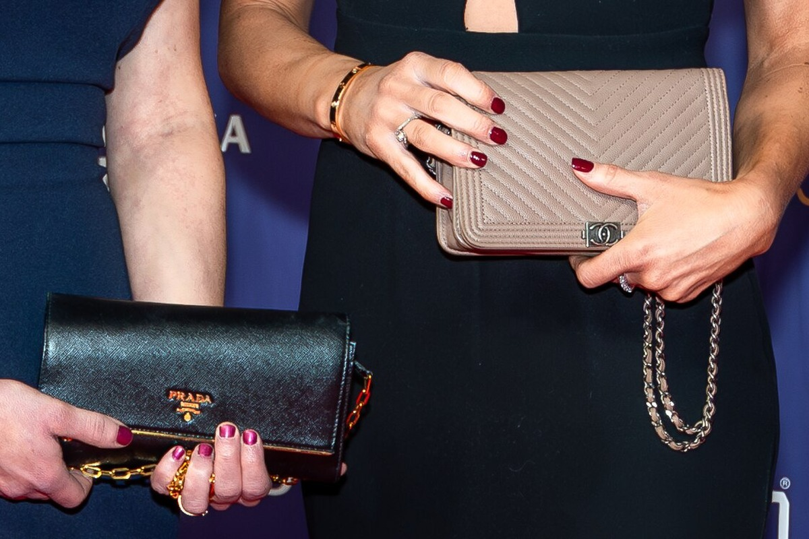
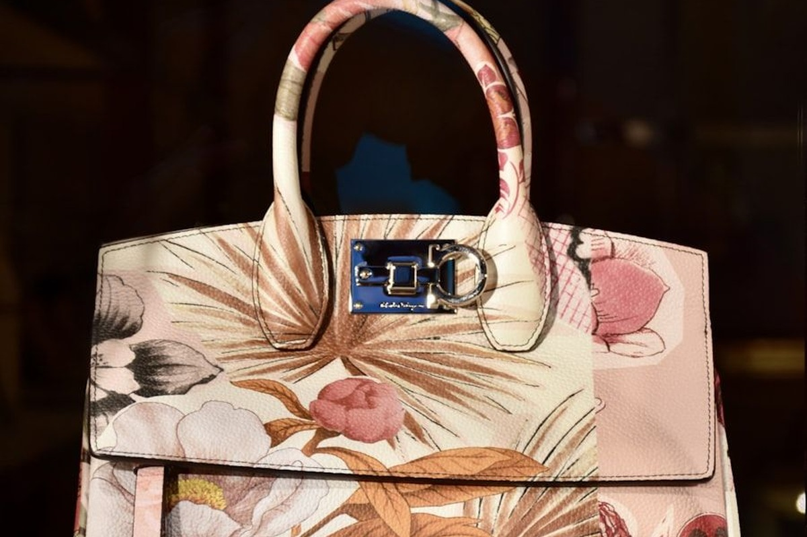
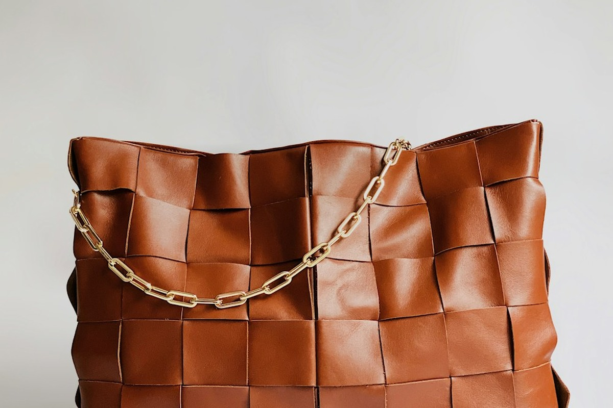
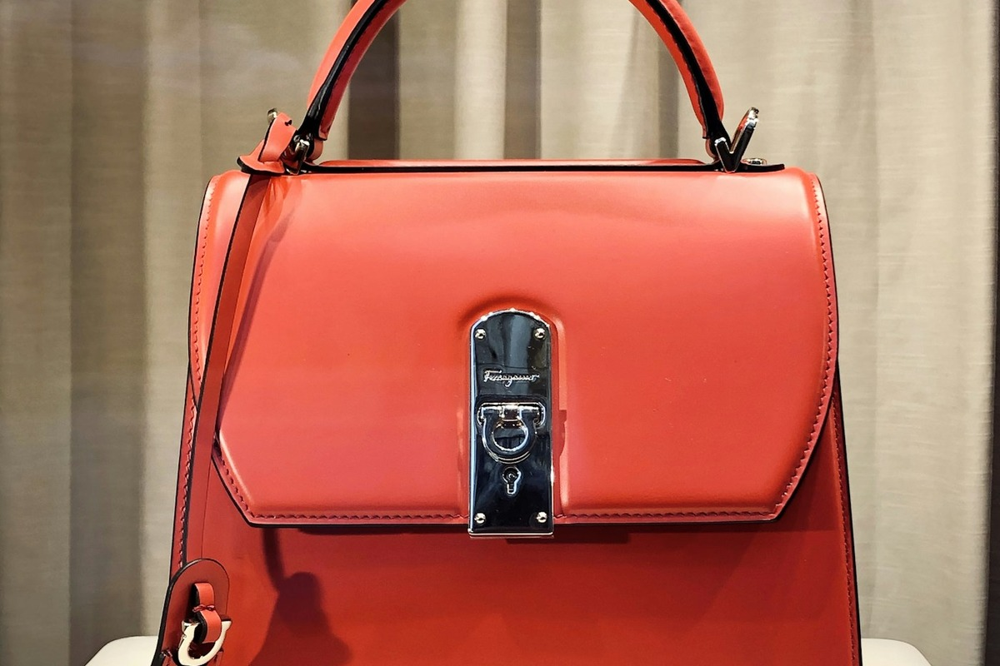
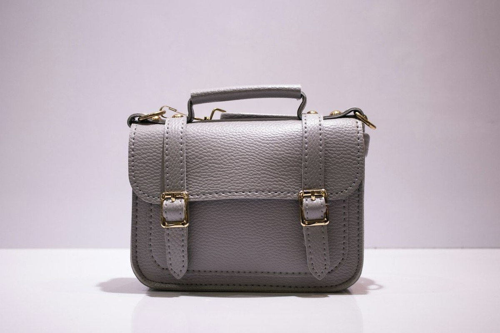
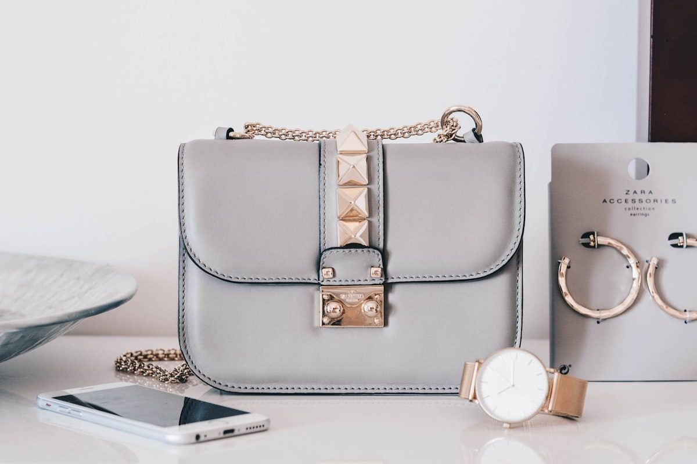

The Masterwork of Handcrafted Luxury Bags
Reticule Canyon unites century-old French saddle-stitching with botanical oak-bark vegetable-tanned leather. Every bespoke reticule, structured tote, and attaché is cut, skived, and hand-burnished individually in our New York atelier.

The Canyon Sovereign Tote
Hand-Waxed Saddle Stitch Seam
ATELIER NY
The Three Pillars of Canyon Maroquinerie
Every bag bearing our hallmark rests upon three non-negotiable standards of heirloom craftsmanship, rejecting modern industrial shortcuts in favor of structural permanence.

Botanical Oak-Bark Tanning
We exclusively harvest full-grain steer hides cured for eighteen months in natural subterranean pits utilizing ground oak bark, mimosa tannins, and mountain wellspring waters to impart peerless structural tensile temper.
Solid Milled Brass Metallurgy
Our buckles, turnlocks, and D-rings are machine-milled from solid ingot brass billets and hand-burnished with natural pumice. Free from synthetic plating, our hardware develops an authentic amber patina across generations.

Double-Needle Saddle Stitch
Executed entirely by hand with two blunt harness needles passing opposite ways through pricked diamond awl holes. Unlike machine lockstitches, if one stitch wears through decades later, the seam will never unravel.

Why Hand Saddle Stitching Outlasts Any Sewing Machine
Industrial luxury brands rely on motorized lockstitch machines that create looped threads susceptible to catastrophic failure when abraded. At Reticule Canyon, every stitch is an independent structural lock.
Beeswax-Coated French Linen
632 GaugeNatural flax fibers saturated in organic beeswax resist moisture penetration, fungal deterioration, and rotational friction during decades of daily carrying.
Pricked Diamond Awl Slits
9 SPI SlantAngled diamond slits align the leather fibers naturally without tearing the dermis, ensuring uniform slant tension and watertight seam compression.
Feathered Skiving & Edge Creasing
Hot Iron FinishLeather margins are hand-skived to fractional millimeter tolerances and sealed with heated bronze irons, preventing raw edge fraying and moisture seepage.
The Reticule Canyon Master Curation
Three iconic architectural leather bag forms forged for formal appointments, transcontinental voyages, and evening salons.

The Canyon Attaché
Engineered with dual internal gussets, reinforced bridle leather top handle, and custom milled brass clasp. Accommodates portfolios, laptops, and archival documents.

The Canyon Satchel
A classic structured shoulder satchel finished with hand-plaited drawcords and double-folded rim. Balances architectural volume with supple tactile grace.
The Woven Canyon Pouch
Interlaced strips of hand-beveled saddle leather create a supple textured envelope that drapes effortlessly in hand. Lined in velvet calfskin with secret card vault.
The Four Stages of Hand Bag Construction
Each bag requires over 36 hours of focused, single-artisan labor from raw hide grading to final wax friction polishing.
Hide Topography Grading
We inspect individual hide bends under directional raking light, charting stretch direction and fiber density before cutting bag panels with hand-forged Japanese knives.
Feather Skiving & Beveling
Joining edges are shaved to exact paper-thin gradients using vintage French edgers so layered seams maintain uniform flush thickness without unsightly bulk.
Double-Awl Saddle Stitch
Held in a wooden stitching clam, the artisan punches each hole with a diamond awl, passing twin needles simultaneously to balance seam tension with micro-metric precision.
Hot Wax Edge Burnishing
Exposed margins are repeatedly coated with natural beeswax, dyed with organic pigments, and friction-rubbed with dense ironwood burnishers to achieve glass-smooth waterproofing.
Technical Bag Specifications
Examine the exact metallurgical, botanical, and tensile parameters governing all Reticule Canyon luxury bag commissions.
| Component | Material Standard | Processing Protocol | Tested Lifespan |
|---|---|---|---|
| Primary Bag Dermis | Grade-A Steer Full Grain | 18-Month Botanical Oak Bark Pit Tannage | 80+ Years / Heirloom Patina |
| Tensile Threading | Waxed Natural Flax Linen (No. 432) | Organic Beeswax Hot Dip Impregnation | 380 N Tensile Break Strength |
| Hardware Castings | Solid Ingot Brass (Alloy C36000) | CNC Milled & Hand Pumice Burnished | Corrosion Proof / Non-Plated |
| Internal Reinforcement | Salpa Reconstituted Leather Board | Natural Rubber Latex Bonding | Permanent Structural Memory |
| Edge Seal Chemistry | Carnauba Wax & Bone Glue Blend | High-Friction Heated Hardwood Burnish | 100% Water Resistant Seal |
Words from Bag Collectors
Read reflections from connoisseurs who carry Reticule Canyon pieces through boardrooms, transatlantic flights, and international galleries.
“The saddle stitching on my Canyon Attaché is breathtaking. In a world overrun by mass-market luxury logos, carrying a bag where you can feel the deliberate human tension in every stitch is an extraordinary privilege.”
“After four years of daily travel across Tokyo, Zurich, and Manhattan, the leather on my tote has acquired an amber honey depth that gets commented on everywhere. The solid brass hardware has never loosened a millimeter.”
“I commissioned a custom monogrammed reticule bag for my anniversary. The consultation at their Lexington Avenue atelier was as bespoke as ordering Savile Row tailoring. It is a genuine generational heirloom.”
Technical & Care Guidance
Common questions regarding full-grain leather aging, bespoke ordering lead times, and heirloom bag maintenance.
Chrome-tanned commercial bags are coated in synthetic plastic topcoats that crack and peel over time. Botanical vegetable-tanned leather remains breathable and naturally absorbs sunlight, skin oils, and ambient humidity, gradually developing an irreplaceable rich amber-cognac patina that increases in beauty each year.
Sewing machines use an interlocking bobbin loop that creates structural vulnerability: if one loop snaps, the entire seam quickly unravels under strain. Our two-needle hand saddle stitch creates two independent cross-passes through each awl hole. Even under severe abrasion, the seam remains firmly locked.
Depending on leather hide selection, custom monogram brass die casting, and internal partitioning requirements, a bespoke commission typically takes between four to eight weeks of artisan bench work. Each piece is crafted start-to-finish by one dedicated master maroquinier.
We recommend buffing your bag with a horsehair brush every few weeks to disperse natural waxes. Once every six to twelve months, apply a modest pea-sized amount of pure neatsfoot oil or botanical beeswax conditioner with a soft lint-free flannel cloth.
Commission Your Bespoke Luxury Bag
Consult directly with our master leathercraftsman at our Lexington Avenue atelier. Select custom steer hides, personalized solid brass hardware, and hand-embossed monograms tailored to your exacting lifestyle.